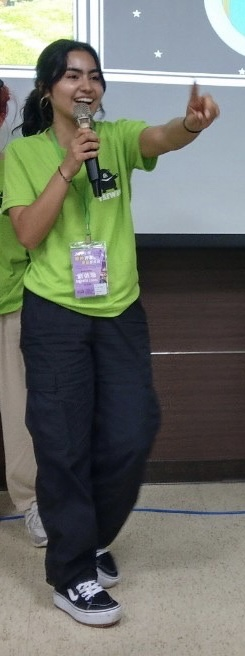
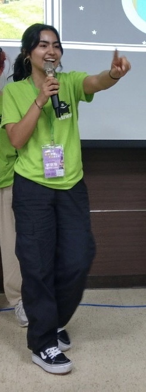
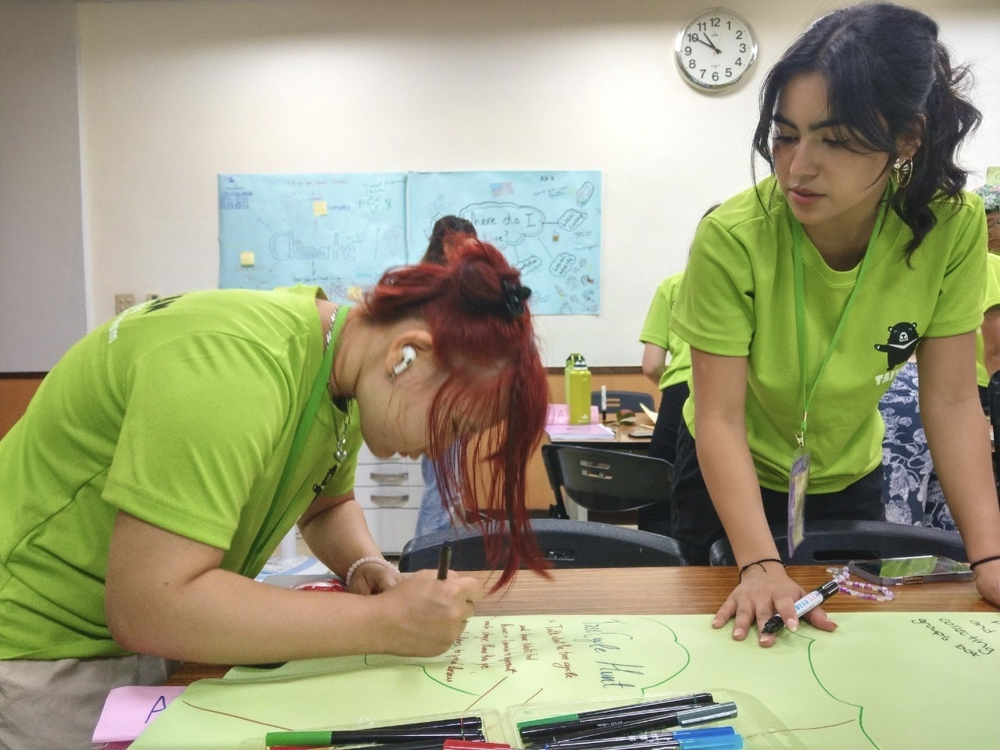
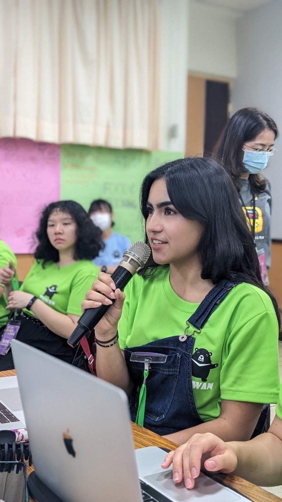
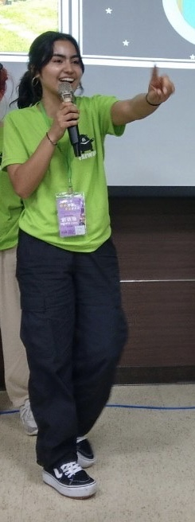
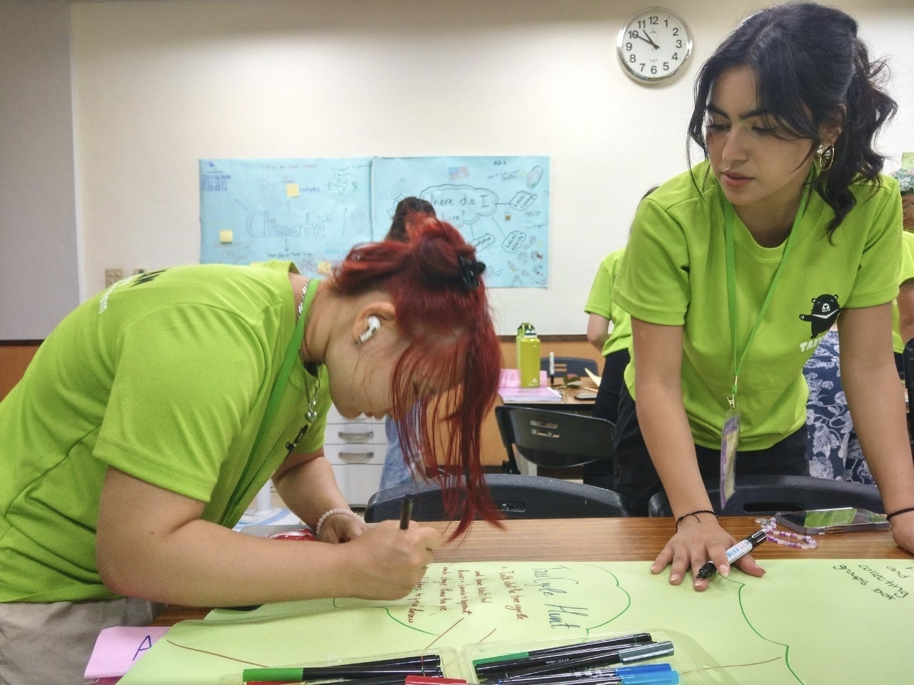
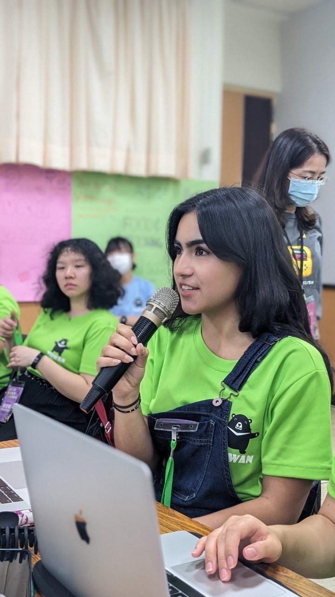

Isabella Lopez
Embarking on my college journey, I bring with me a wealth of diverse experiences that have shaped both my professional acumen and personal growth. My journey into the workforce commenced with Spirit Halloween, where I first honed my customer service skills as a Sales Associate. Amidst the seasonal frenzy, I learned to thrive under pressure while maintaining a positive attitude, even in the face of demanding customers. Whether assisting patrons on the sales floor or managing transactions at the cashier station, I prioritized cleanliness and organization, ensuring a seamless and enjoyable shopping experience for all. As a native Spanish speaker, language has always been integral to my identity, providing me with a unique perspective and cultural fluency. Moreover, my ongoing pursuit of Mandarin Chinese for over 13 years has further enriched my linguistic repertoire, bolstering my cross-cultural competency and communication skills. Transitioning from the spirited atmosphere of Spirit Halloween to the vibrant ambiance of Mendocino Farms, I embraced the multifaceted roles within the hospitality industry. From serving as a Hostess to managing cashier duties and fulfilling runner responsibilities, I adeptly navigated through various tasks within a single shift. This experience not only underscored the importance of collaboration and adaptability but also instilled in me a strong work ethic characterized by resilience and enthusiasm.
Beyond the confines of paid employment, my dedication to community service has been a cornerstone of my identity. Venturing abroad to participate in the English Teaching Volunteer Service Program in Taiwan was a transformative experience that broadened my perspective and deepened my cultural understanding. At Bali Junior High, I transcended language barriers to connect with my students, witnessing their remarkable progress and fostering a supportive learning environment. Being hailed as their favorite teacher remains a cherished accomplishment, fueling my passion for education and cross-cultural communication. Additionally, my commitment to education extended to my tenure as a Teacher's Aid at San Jose Chinese School, where I provided invaluable support to both students and educators alike. From facilitating classroom activities to offering technical assistance during challenging times, I endeavored to enhance the learning experience and alleviate the burden on teachers.
Now, as I embark on my academic journey at the University of California, Riverside, I am poised to leverage my diverse skill set and experiences to thrive in both academic and professional spheres. With a GPA reflective of my dedication to excellence, I approach each opportunity with a sense of curiosity and determination, eager to make meaningful contributions and continue my journey of growth and discovery. Fluent in Spanish, English, and Mandarin Chinese, I possess a nuanced understanding of cultural nuances and effective communication strategies, complemented by my critical thinking, interpersonal, and organizational skills. As I embark on this new chapter, I am confident in my ability to excel and positively impact those around me.
Experience
Hospitality
• Worked in various roles including Hostess, Cashier, and Runner, often within the same shift, requiring adaptability and quick thinking.
• Developed strong collaborative skills and the ability to handle multiple tasks efficiently, particularly in response to staffing challenges.
• Cultivated a positive and helpful attitude even in high-stress situations, fostering a productive work environment and customer experience.
Sales Associate
• Demonstrated proficiency in multitasking and customer service as a Sales Associate during the Halloween rush at Spirit Halloween.
• Balanced responsibilities between floor assistance and cashier duties while prioritizing cleanliness and organization to ensure a positive customer experience.
Teacher/Teaching Assistant
• Chosen for the 2023 English Teaching Volunteer Service Program by the Overseas Community Affairs Council of Taiwan, I served as a dedicated teacher at Bali Junior High.
• Adapted communication strategies to navigate language and cultural barriers, fostering a supportive learning environment that facilitated rapid student improvement.
• Witnessed the tangible progress of students as they developed their English skills, a rewarding experience that underscored the value of effective teaching methods.
• Earned acclaim as a favorite teacher among students, reflecting the positive impact of personalized instruction and cross-cultural understanding.
Education
UC Riverside
Portfolio
 



 